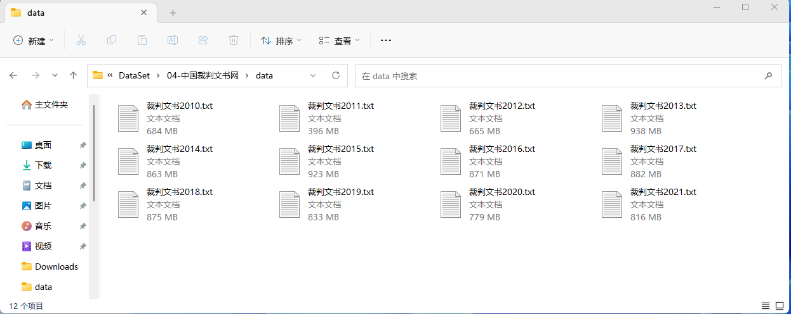

想用裁判文书数据集，逐年训练词向量的同学，可以好好看本文，能节省你几十个小时时间。
一、检查数据
裁判文书数据集，每个月份存储到一个csv， 每个年份有一个对应的文件夹。下图是 2021 年的文件夹截图
csv字段格式是一致的，我们只需要找一个文件，尝试着读取前5行，查看数据中有哪些字段。
import pandas as pd
df = pd.read_csv('2013/2013-01.csv', nrows=5)
df.dropna(subset=['文书内容'], inplace=True)
df.head(1)

二、构造语料
我们只从csv中选取 “文书内容” ，并将其存储到语料txt文件中。
考虑到电脑性能， 预料不要太大， 1G左右是比较适中，在电脑内存为8G的情况下，应该能跑通。
2010/2011/2013这三个年度的数据只有几百M， 数据全部保留。 剩下的年份，设置不同的抽样比例，尽可能将生成的语料txt文件控制在1G左右。下面是经过粗略计算设定的比例，实际最终数据控制在800M左右。
裁判文书数据量高达300G， 读取、抽样、存储，全部过程耗时大概6小时。
| 年份 | 解压后文件大小 | 抽样比例 | 语料txt大小 |
|---|---|---|---|
| 2010 | 761M | 100% | 684M |
| 2011 | 452M | 100% | 396M |
| 2012 | 757M | 100% | 665M |
| 2013 | 5.13G | 20% | 984M |
| 2014 | 23.7G | 4% | 905M |
| 2015 | 33.6G | 3% | 968M |
| 2016 | 39.9G | 2.4% | 914M |
| 2017 | 44.6G | 2.2% | 882M |
| 2018 | 24.8G | 4% | 875M |
| 2019 | 48.3G | 2% | 833M |
| 2020 | 91.2G | 1% | 779M |
| 2021 | 32.3G | 3% | 816M |
import os
import pandas as pd
# 年份、抽样比例
year_fracs = [
('2010', 1), ('2011', 1), ('2012', 1),
('2013', 0.2), ('2014', 0.04), ('2015', 0.03),
('2016', 0.024), ('2017', 0.022), ('2018', 0.04),
('2019', 0.02), ('2020', 0.01), ('2021', 0.03)
]
for year, frac in year_fracs:
print(f'正在构造 {year} 年的语料txt文件')
with open('裁判文书{}.txt'.format(year), 'w', encoding='utf-8') as yf:
#
csvfs = [f'{year}/{csvf}' for csvf in os.listdir(year) if '.csv' in csvf]
for csvf in csvfs:
# 为节省内存开销，
# 只读 csv 中的 “文书内容” 一个字段，
# 且设置 chunksize 分批次读取
chunk_dfs = pd.read_csv(csvf, usecols=['文书内容'], chunksize=10000)
for chunk_df in chunk_dfs:
chunk_df.dropna(subset=['文书内容'], inplace=True)
mdf = chunk_df.sample(frac=frac)
text = ''.join(mdf['文书内容'].values)
yf.write(text)
三、训练word2vec
使用data内的语料txt，每个txt训练出一个对应的word2vec，结果自动存储到output/Word2Vec

使用cntext2.0.0， 代码如下
import cntext as ct
txtfs = [f for f in os.listdir('data') if '.txt' in f]
for txtf in txtfs:
print(txtf)
w2v_model = ct.W2VModel(corpus_file=txtf, lang='chinese')
w2v_model.train(vector_size=100, window_size=6)
裁判文书年份、语料txt大小及训练时间长度汇总如下表
| 年份 | 语料txt大小 | 训练word2vec耗时 |
|---|---|---|
| 2010 | 684M | 2127s |
| 2011 | 396M | 1225s |
| 2012 | 665M | 2105s |
| 2013 | 984M | 2967s |
| 2014 | 905M | 2810s |
| 2015 | 968M | 3032s |
| 2016 | 914M | 2880s |
| 2017 | 882M | 2882s |
| 2018 | 875M | 2852s |
| 2019 | 833M | 2765s |
| 2020 | 779M | 2539s |
| 2021 | 816M | 2609s |
三、使用word2vec
训练结果如下图
3.1 导入模型
output/Word2Vec中有多个年份的模型， 模型文件不大， 如果内存允许，可以同时导入。首先要获取模型文件路径
import os
w2v_fs = [f'output/Word2Vec/{f}' for f in os.listdir('output/Word2Vec') if '.npy' not in f]
w2v_fs
Run
['output/Word2Vec/裁判文书2010.100.6.bin',
'output/Word2Vec/裁判文书2011.100.6.bin',
'output/Word2Vec/裁判文书2012.100.6.bin',
'output/Word2Vec/裁判文书2013.100.6.bin',
'output/Word2Vec/裁判文书2014.100.6.bin',
'output/Word2Vec/裁判文书2015.100.6.bin',
'output/Word2Vec/裁判文书2016.100.6.bin',
'output/Word2Vec/裁判文书2017.100.6.bin',
'output/Word2Vec/裁判文书2018.100.6.bin',
'output/Word2Vec/裁判文书2019.100.6.bin',
'output/Word2Vec/裁判文书2020.100.6.bin',
'output/Word2Vec/裁判文书2021.100.6.bin']
import cntext as ct
import re
w2v_models = []
years = [re.findall('\d{4}', f)[0] for f in w2v_fs]
for year, w2v_f in zip(years, w2v_fs):
print('{year}')
w2v_models.append(ct.load_w2v(w2v_f))
print('\n\n')
Run
2010
Loading word2vec model...
2011
Loading word2vec model...
2012
Loading word2vec model...
......
2021
Loading word2vec model...
3.2 模型词汇量
查看不同年份模型的词汇量
import re
for year, w2v_model in zip(years, w2v_models):
wordnum = len(w2v_model.wv)
print(f'{year}词汇量: {wordnum}')
Run
2010词汇量: 374105
2011词汇量: 312039
2012词汇量: 490673
2013词汇量: 675057
2014词汇量: 634497
2015词汇量: 667753
2016词汇量: 638568
2017词汇量: 656776
2018词汇量: 667265
2019词汇量: 629285
2020词汇量: 582988
2021词汇量: 571346
3.3 语义检查
先查看2020年的， 以 “犯罪” 为例
# 最相似的10个词
w2v_models[0].wv.most_similar(['犯罪'], topn=10)
Run
[('认真接受', 0.9499362707138062),
('民事诉讼法', 0.9497376084327698),
('建设工程有限公司', 0.9491338729858398),
('望春监狱', 0.9488678574562073),
('人身损害赔偿', 0.9487593173980713),
('判决发生', 0.9485785365104675),
('本案受理费', 0.9484607577323914),
('裁定准许', 0.9480699896812439),
('现在宁波市', 0.9479051828384399),
('温州银行', 0.9478054046630859)]
同时检查2010-2021， 分别返回前5个最相似的词
print('与“犯罪”最相似5个词', end='\n')
print()
for year, w2v_model in zip(years, w2v_models):
wordtuples = w2v_model.wv.most_similar(['犯罪'], topn=5)
words = ' '.join([w for w,v in wordtuples])
print(f'{year}模型: {words}')
Run
2010模型: 认真接受 民事诉讼法 建设工程有限公司 望春监狱 人身损害赔偿
2011模型: 欲证明 辩护意见 被告中铁 应承担 蔡某甲
2012模型: �� 判处有期徒刑 盒 执行 黄某乙
2013模型: 雇员受害 AFT8 箐 牛鲁敬 被告金析航
2014模型: 齐立权 永川支公司 徐正青 万给 鲁子双
2015模型: 蒋明良 19KM 二百一十八条 一定独创性 类型主要
2016模型: 钧益公司 王乌旦 未予缴纳 之后离开 元系金
2017模型: 巫山县振兴 工程承揽 立奥 会展 皖1004
2018模型: 浙湖 公路东向西 雷德佑 福建省长汀县 辽宁成工
2019模型: 6.2475% 郑善 陈能颂 招某 14726.91
2020模型: 促进法 流传 四川省米易县 有奴 共有产权
2021模型: 柳凯 张鲁 几张照片 挪走 耿正会
额， 每个模型不能说跟“犯罪”毫无关系，只能说是一毛钱关系都没有！难道是我选的词有问题，错怪模型，那再试试“婚姻”
print('与“婚姻”最相似5个词', end='\n')
print()
for year, w2v_model in zip(years, w2v_models):
wordtuples = w2v_model.wv.most_similar(['婚姻'], topn=5)
words = ' '.join([w for w,v in wordtuples])
print(f'{year}模型: {words}')
Run
与“婚姻”最相似5个词
2010模型: 签收 相关 姜明 20107 依法
2011模型: 下列条件 连带责任保证 债务 举证质证 申请撤诉
2012模型: 竹乐 程志街 7808292.65 乐至刑初 衢江
2013模型: 分歧双方 孙明霞〇 裁明 孙林 多派
2014模型: 山林土地 道成 被告肖小健 董锐 梓民初
2015模型: 秀洲 永乐街道 此笔费用 上特阀业 唐厚洪
2016模型: 其于2007 故予认定 千荣公司 工程验收报告 邢子
2017模型: 拆排栅 53612 初字252 被告彭国强 鸿恒昌公司
2018模型: 淄博分中心 三厅 临街门市 20200 科健
2019模型: 新岗位 2006) 风险稳控 主要树种 重量价格
2020模型: 模板款 生活用房 从轻处理建议 张春林 刘俊平
2021模型: 时二乐 对童 黄青书 一经通知 电话问
哎！ 依然是彼此毫无语义关系， 种种迹象表明，这些训练出的模型就真不咋地！
四、原因分析
如果说数据没有清洗，去停用词，可能会干扰训练效果。但是我经过去停词等数据清洗，训练得到的模型表现与之前没啥变化，依然是捕捉不到语义关系信息。
至于数据量大小的问题， 大邓之前分享的
两个推文中使用的语料都是好几个G的语料txt， 基本上语义捕捉的都很完美。但前几天 词向量 | 使用1亿B站用户签名训练word2vec词向量 中语料只有302M， 但语义信息捕捉的很好。